File: 000660.gt.txt (if the image is defective, simply delete all Arabic text and the line will be excluded)
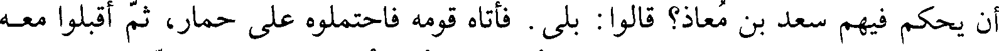
أن يحكم فيهم سعد بن معاذ؟ قالوا: بلى. فأتاه قومه فاحتملوه على حمار، ثم أقبلوا معه
File: 000661.gt.txt (if the image is defective, simply delete all Arabic text and the line will be excluded)
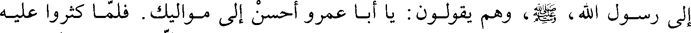
إلى رسول الله، صلي الله عليه و سلم، وهم يقولون: يا أبا عمرو أحسن إلى مواليك. فلما كثروا عليه
File: 000662.gt.txt (if the image is defective, simply delete all Arabic text and the line will be excluded)
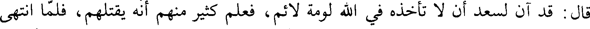
قال: قد آن لسعد أن لا تأخذه في الله لومة لائم، فعلم كثير منهم انه يقتلهم، فلما انتهى
File: 000663.gt.txt (if the image is defective, simply delete all Arabic text and the line will be excluded)
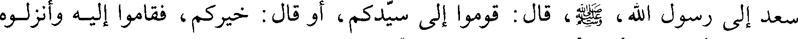
سعد إلى رسول الله، صلي الله عليه و سلم، قال: قوموا إلى سيدكم، أو قال: خيركم، فقاموا إليه وأنزلوه
File: 000664.gt.txt (if the image is defective, simply delete all Arabic text and the line will be excluded)
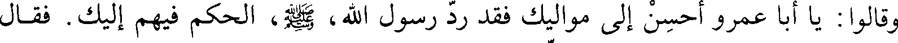
وقالوا: يا أبا عمرو أحسن إلى مواليك فقد رد رسول الله، صلي الله عليه و صلم،الحكم فيهم إليك. فقال
File: 000665.gt.txt (if the image is defective, simply delete all Arabic text and the line will be excluded)
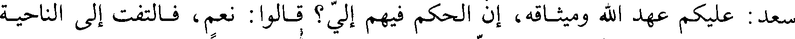
سعد: عليكم عهد الله وميثاقه، أن الحكم فيهم إلي؟ قالوا: نعم، فالتفت إلى الناحية
File: 000666.gt.txt (if the image is defective, simply delete all Arabic text and the line will be excluded)
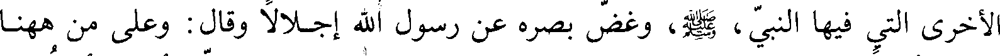
الأخرى التي فيها النبي، صلي الله عليه و سلم، وغض بصره عن رسول الله إجلالا وقال: وعلى من هاهنا
File: 000667.gt.txt (if the image is defective, simply delete all Arabic text and the line will be excluded)
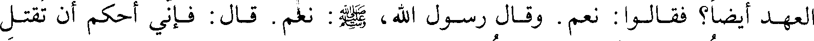
العهد أيضا؟ فقالوا: نعم. وقال رسول الله، صلي الله عليه و سلم: نعم. قال: فإني أحكم أن تقتل
File: 000668.gt.txt (if the image is defective, simply delete all Arabic text and the line will be excluded)
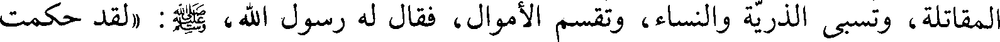
المقاتلة، وتسبى الذرية والنساء، وتقسم الأموال، فقال له رسول الله، صلي الله عليه و سلم: (لقد حكمت
File: 000669.gt.txt (if the image is defective, simply delete all Arabic text and the line will be excluded)
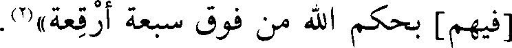
[فيهم] بحكم الله من فوق سبعة أرقعة)(2).
File: 000670.gt.txt (if the image is defective, simply delete all Arabic text and the line will be excluded)
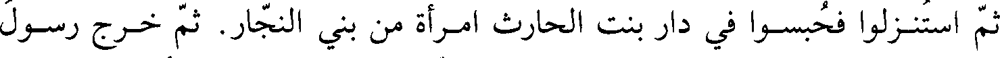
ثم استنزلوا فحبسوا في دار بنت الحارث امرأة من بني النجار. ثم خرج رسول
File: 000671.gt.txt (if the image is defective, simply delete all Arabic text and the line will be excluded)
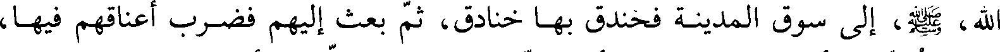
الله، صلي الله عليه و سلم، إلى سوق المدينة فخندق بها خنادق، ثم بعث إليهم فضرب أعناقهم فيها،
File: 000672.gt.txt (if the image is defective, simply delete all Arabic text and the line will be excluded)
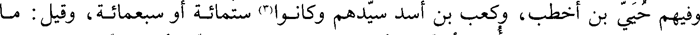
وفيهم حيي بن أخطب، وكعب بن أسد سيدهم وكانوا(3) ستمائة أو سبعمائة، وقيل: ما
File: 000673.gt.txt (if the image is defective, simply delete all Arabic text and the line will be excluded)
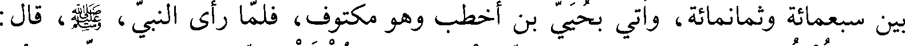
بين سبعمائة وثمانمائة، وأتي بحيي بن أخطب وهو مكتوف، فلما رأى النبي، صلي الله عليه و سلم، قال:
File: 000674.gt.txt (if the image is defective, simply delete all Arabic text and the line will be excluded)
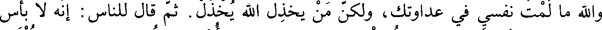
والله ما لمت نفسي في عداوتك، ولكن من يخذل الله يخذل. ثم قال للناس: إنه لا بأس
File: 000675.gt.txt (if the image is defective, simply delete all Arabic text and the line will be excluded)
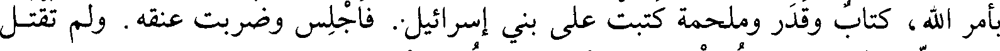
بأمر الله، كتاب وقدر وملحمة كتبت على بني إسرائيل: فاجلس وضربت عنقه، ولم تقتل
File: 000676.gt.txt (if the image is defective, simply delete all Arabic text and the line will be excluded)
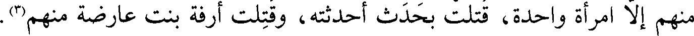
منهم إلا امرأة واحدة، قتلت بحدث أحدثته، وقتلت أرفعة بنت عارضة منهم(3).
File: 000677.gt.txt (if the image is defective, simply delete all Arabic text and the line will be excluded)
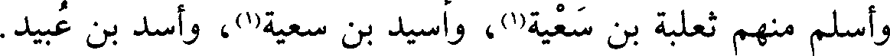
وأسلم منهم ثعلبة بن سعية(1)، وأسيد بن سعية(1) وأسيد بن عبيد
File: 000678.gt.txt (if the image is defective, simply delete all Arabic text and the line will be excluded)
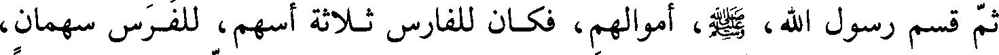
ثم قسم رسول الله، صلي الله عليه و سلم، أموالهم، فكان للفارس ثلاثة أسهم، للفرس سهمان،
File: 000679.gt.txt (if the image is defective, simply delete all Arabic text and the line will be excluded)
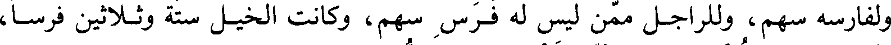
ولفارسه سهم، وللراجل ممن ليس له فرس سهم، وكانت الخيل ستة وثلاثين فرسا،
File: 000680.gt.txt (if the image is defective, simply delete all Arabic text and the line will be excluded)
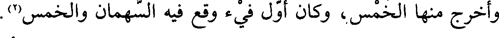
وأخرج منها الخمس، وكان أول فيء وقع فيه السهمان والخمس(2).
File: 000681.gt.txt (if the image is defective, simply delete all Arabic text and the line will be excluded)
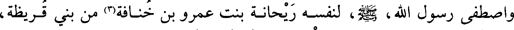
واصطفى رسول الله، صلي الله عليه و سلم، لنفسه ريحانة بنت عمرو بن خنافة(3) من بني قريظة،
File: 000682.gt.txt (if the image is defective, simply delete all Arabic text and the line will be excluded)
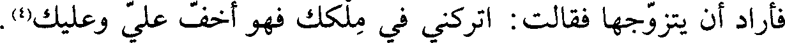
فأراد أن يتزوجها فقالت: اتركني في ملكك فهو أخف علي وعليك(4).
File: 000683.gt.txt (if the image is defective, simply delete all Arabic text and the line will be excluded)
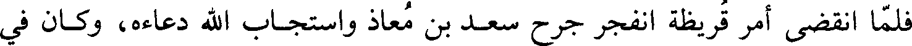
فلما انقضى أمر قريظة انفجر جرح سعد بن معاذ واستجاب الله دعاءه، وكان في
File: 000684.gt.txt (if the image is defective, simply delete all Arabic text and the line will be excluded)
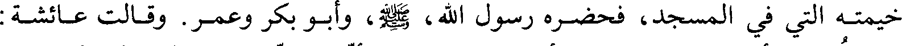
خيمته التي في المسجد، فحضره رسول الله، صلي الله عليه و سلم، وأبو بكر وعمر. وقالت عائشة:
File: 000685.gt.txt (if the image is defective, simply delete all Arabic text and the line will be excluded)
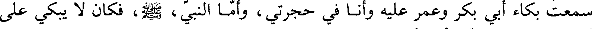
سمعت بكاء أبي بكر وعمر عليه وأنا في حجرتي، وأما النبي، صلي الله عليه و سلم، فكان لا يبكي على
File: 000686.gt.txt (if the image is defective, simply delete all Arabic text and the line will be excluded)
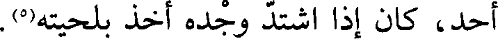
أحد، كان إذا اشتد وجده اخذ بلحيته(5).
File: 000687.gt.txt (if the image is defective, simply delete all Arabic text and the line will be excluded)
وكان فتح قريظة في ذي القعدة وصدر ذي الحجة، وقتل من المسلمينفي الخندق
File: 000688.gt.txt (if the image is defective, simply delete all Arabic text and the line will be excluded)
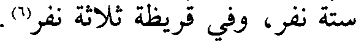
ستة نفر، وفي قريظة ثلاثة نفر(6).
File: 000689.gt.txt (if the image is defective, simply delete all Arabic text and the line will be excluded)
ودخلت سنة ست من الهجرة
To Save: `Ctrl+s`, make sure to choose `Webpage, complete`!